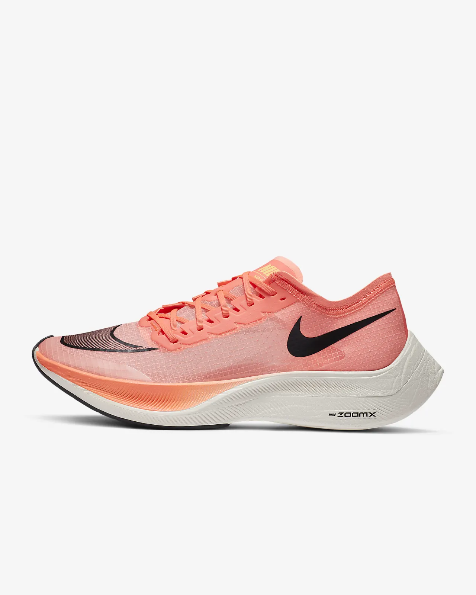

Daniel Králík
Základní informace
Jmenuji se Daniel Králík a pocházím z Příbrami. Vystudaval jsem bakaláře na FIT ČVUT a usiluji o to abych dostudoval i navazující magisterské studium. Rád se učím nové věci, programuji, ale také hraji na kytaru, zpívám a sportuji. Po škole bych rád byl kazatelem - resp.kázal dobrou zprávu všem, která se stala skrze Božího Syna Ježíše Krista, totiž že každý z nás může mít přímý přístup k Bohu a volat Abba Otče, protože, každý, kdo Ho přijme, má život věčný v nebi. Zároveň bych rád měl civilní povolání a pracoval v IT.
Proč NI-CCC
Do předmětu jsem se přihlásil ze zvědavosti a pro pohlédnutí do světa IT i z jiné než programátorské a manažerské perspektivy.
Nápady
Jak získat důmyslně Nike Vaporfly
Aplikace do Google Play
Nike Vaporfly
Google Play Apps
Kontakt
- Telefon:+420 605 391 088
- Email: daniel.kralik.cze@gmail.com, kralidan@fit.cvut.cz